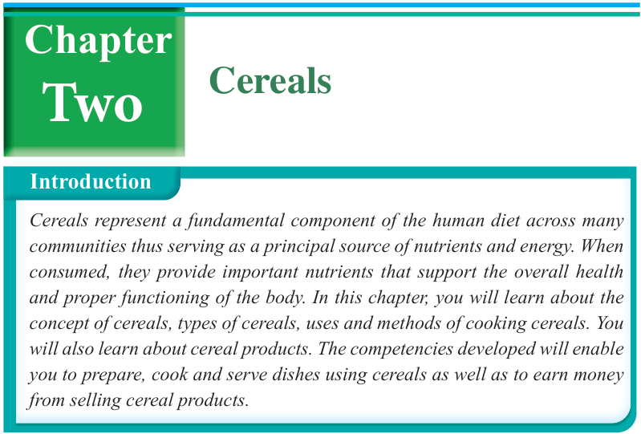

17


Food and Human Nutrition

Form Two
Think
Cereals and their use
The concept of cereals
Cereals are edible seeds or grains of cultivated grasses. They are staple foods in many regions in Tanzania and in other parts of the world. Cereals are easy to grow, transport, prepare and cook. They are also non-perishable; hence, they can be stored for a long period without spoiling. They are useful for making human diets, brewing purposes and feeding livestock. Well dried whole-grain cereals should be kept in tightly covered containers and stored in cool, dry places to prevent mould growth and pest infestation. Stored cereals should be inspected regularly to check if there is any sign of infestation for appropriate measures to be taken.
Types of cereals
There are different types of cereals. These include wheat, rice, maize, sorghum, finger millet, oats, barley and pearl millet. Figure 2.1 shows different types of cereals.

Cereals
Introduction
Cereals represent a fundamental component of the human diet across many communities thus serving as a principal source of nutrients and energy. When consumed, they provide important nutrients that support the overall health and proper functioning of the body. In this chapter, you will learn about the concept of cereals, types of cereals, uses and methods of cooking cereals. You will also learn about cereal products. The competencies developed will enable you to prepare, cook and serve dishes using cereals as well as to earn money from selling cereal products.
Two
Chapter
17/09/2025 16:30